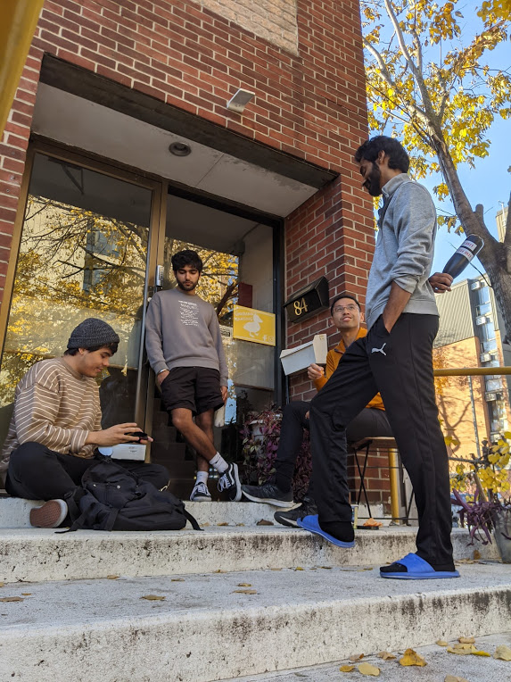
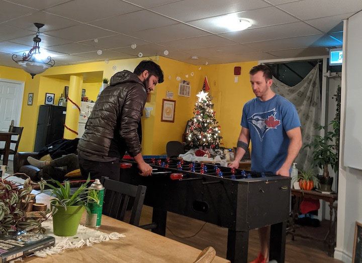

2020 was one hell of a year for little Gosling's Landing. After experiencing a 90% cancellation rate in March when the travel ban began, things were not feeling quite the same. Luckily we had a few people get stranded with us for a while - don't worry, they said this was an awesome place to be stuck during the lockdown :)
All of our guests began staying by the week. For some, that turned into months. At first it was a little difficult to accept that after a short run (348 days to be exact), we were done being a home away from home for travellers around the world. More than half of our bunks were empty. No one new was coming. One at a time guests were flying home. We weren't really sure what to do but wait and hope for the best.
A few months went by and some people looking to relocate within the city or country found their way over. We've seen the ups and the downs. Times have definitely been tough for some now that economic opportunities are at a low and the nights seem to be getting longer. But we try our best to make this a welcoming and happy place for everyone, and we really couldn't ask for a better living arrangement during these self-isolating times.
Now that it's 2021 and covid is still well on the rise, we have been considering what to do with this space. Will things ever go back to how they were? Will we want them to go back to how they were?
The truth is, Gosling's Landing has never felt more like a home than it does now. We've really become a family. A crew of co-living locals and internationals trying to survive the pandemic and make it through a never-ending foosball tournament.
You get up in the morning and someone makes you a nice big cup of tea. We get excited when someone receives a parcel and even help assemble new furniture. We sit down for meals and keep each other in check. These moments were rare or almost impossible to come by a year ago when travellers were constantly coming in and out, sometimes for one or two nights at a time. But now, minus a new face every once in a while, you know everyone's story. It has really never felt this cozy.
Perhaps one day down the road when borders start to open up and our goslings start to take off from the nest, we'll look forward to welcoming short-term strangers again. But for now, with the start of the new year, we happily embrace the new Gosling's Landing. Our new (and better) normal. A true home away from home.
This year, we'll be saying good bye to our booking platforms and our site will be taking a hiatus. If you're looking for an awesome place to take cover for a while, get in touch. We'll be here living low.
Stay safe! xx
blogGL
GL 2021: Our new normal
January 2021


